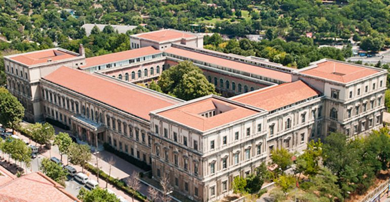

Tendencat e reja në industria e modës: Krijimtari, diversiteti dhe teknologjia
Një trend i dukshëm është ndërlidhja midis stilit të vjetër dhe inovacionit modern në skenën e modës. Krijuesit e modës eksperimentojnë me kombinimin e elementeve klasike të veshjeve me teknologjinë e re dhe materialet e avancuara. Kjo sjellje ka rezultuar në krijimin e rrobaqepës së larmishme që ndërthur traditën me futurizmin. Diversiteti dhe përfshirja janë tema të rëndësishme në industrinë e modës gjatë muajit të fundit. Krijuesit angazhohen për të prezantuar koleksione të përshtatshme për të gjitha format e trupit dhe për të përfaqësuar sa më mirë diversitetin e kulturave dhe identiteteve të ndryshme. Modelet me ngjyra të ndryshme dominuan pistën e modës, duke krijuar një atmosferë mbresëlënëse që përshkruan botën e pabarazisë dhe ndryshimeve pozitive që po ndodhin. Përdorimi i teknologjisë së avancuar është një zhvillim tjetër i rëndësishëm në prodhimin e veshjeve. Industria e modës përdor makinat dhe teknologjinë e inteligjencës artificiale për të përmirësuar procesin e prodhimit dhe për të krijuar veshje më të qëndrueshme dhe tërheqëse. Përdorimi i materialeve të ricikluara dhe prodhimi i veshjeve me ndikim minimal në mjedis po bëhen gjithnjë e më të rëndësishme për krijuesit e modës dhe për konsumatorët. Eventet e rëndësishme të modës, si shfaqjet e javës së modës dhe ekspozitat, kanë mbledhur një publik të gjerë dhe kanë sjellë një përgjigje entuziaste gjatë muajit të fundit. Pjesëmarrësit kanë pasur mundësinë të shohin koleksione të freskëta, të diskutojnë ide dhe inovacione me ekspertët e industrisë, duke krijuar një atmosferë frymëzuese dhe stimuluese për të ardhmen e modës. Përfundimisht, industria e modës ka treguar një përkushtim të madh për krijimtari dhe inovacion gjatë muajit të fundit. Krijuesit e modës eksperimentojnë me stilet, makinat dhe materialet e reja për të sjellë freski dhe frymëzim në botën e veshjeve. Diversiteti, përfshirja dhe ndikimi i teknologjisë së avancuar hapin horizonte të reja dhe të ndritshme për të ardhmen e industrisë së modës.
Barcaleta te ndryshme
Një shkencëtar Shqiptar merr pjesë në një konferencë rreth kërkimeve arkeologjike. Filluan të mburren Amerikanët: – në vendin tonë gërmuam 25 metra nën dhe dhe gjetëm kabllo telefoni. Dmth të parët tanë kanë përdorur telefona. I vjen rradha Shqiptarit: – Ne në vendin tonë gërmuam 50 m sgjetëm gjë, gërmuam edhe 50 m të tjerë prapë sgjetëm gjë … dmth. të parët tanë kanë përdorur celular. amerikani, gjermani dhe shqiptari. Ne nje burg kane qen te mbyllur amerikani, gjermani dhe shqiptari. Pasi i denuan po i pyesin per deshiren e fundit. Amerikani dhe gjemani e shprehen deshiren per ta pare shtepin dhe per ti takuar familjen. Kur e pyesin shqiptarin ai u thote, deshira ime mos i lini kto te dy per ti taku familjet e tyre! 3 te mencurit" Nje dite tre shoke kan qene duke biseduar. Njeri prej atyre thot: "kam degjuar se me 13 shtator bora ka me qene deri ne fyt". Tjetri thot: "po leri bre ato llafe se un sapo degjova lajmet me 13 shtator ka me qen 40 grad celsius". I treti i degjon dhe kthehet e thot: "uhh kush po e pastron gjith at bore ne 40 grad celsius".
Fjalekryq

1 Ndërtesa më e lartë në botë 828 m 6 Qyteti më i populluar në botë 8 Vendi më i populluar në botë 9 Vendndodhja e hotelit më të vjetër në botë, Nishiyama Onsen Keiunkan 11 Personi më i pasur në botë 12 I vetmi organ më kompleks se syri është 13 Gjuha më e folur në botë 16 Konsumon sasinë më të madhe të picës në botë për frymë popullsie 17 Planeti i vetëm që rrotullohet në drejtim të akrepave të orës 18 Njëbrirëshi (unicorn) është kafsha kombëtare e 19 Pinoku u botua për herë të parë në cilin vend? DOWN 2 Vendi ku është regjistruar temperatura më e lartë ndonjëherë 3 Vendi ku është regjistruar temperatura më e ftohtë ndonjëherë 4 Vendi me më shume turistë 5 E vetmja pjesë e trupit që nuk mund të shërohen vetë 7 Kafsha që ka 3 zemra 10 Krijesa më vdekjeprurëse në botë 14 Shteti me shumicën e ishujve 15 Atraksioni më i vizituar në Evropë Pergjigjet ACROSS DOWN 1-Burjkhalifa 2-Kaliforni 6-Tokio 3-Antarktida 8-Kina 4-Franca 9-Japonia 5-Dhembet 11-Elonmusk 7-Oktapodi 12-Truri 10-Mushkonja 13-Anglishtja 14-Suedia 16-Norvegjia 15-Luvri 17-Venusi 18-Skocise 19-Itali
Punuan:
Quiz per te zbuluar personalitetin e cdo individi
1. A jeni shume energjik dhe aktiv? A. Po, une jam shume energjik dhe aktiv. B. Jo, une ndjehem mire duke qene i qetë. C. Une kam nje nivel te mesem te energjise dhe aktivitetit. 2. A jeni te interesuar per ide dhe koncepte te reja? A. Po, une jetoj per te eksploruar ide te reja. B. Jo, une preferoj te qendroj me ide te njohura dhe te provuara. C. Une kam nje interes te mesem per ide te reja dhe te vlefshme. 3. A jeni te afte te merrni vendime shpejte dhe te vendosni plane te qarta? A. Po, une kam nje aftesi te mire per te marr vendime dhe planifikim. B. Jo, une ndjehem me mire duke lene opsionet e hapura dhe te ndryshueshme. C. Une kam nje aftesi te mesme per te marr vendime dhe planifikim. 4. A jeni te ndjeshem ndaj ndjenjave dhe reagimeve te tjereve? A. Po, une jam shume i ndjeshem ndaj ndjenjave dhe reagimeve te tjereve. B. Jo, une ndjehem mire duke u bazuar ne fakte dhe logjike. C. Une kam nje nivel te mesem te ndjeshmerise ndaj ndjenjave dhe reagimeve te tjereve. 5. A jeni te organizuar dhe te ndjeheni mire duke ndjekur planin? A. Po, une jam shume i organizuar dhe i ndjehem mire duke ndjekur planin. B. Jo, une ndjehem me mire duke u perpjekur te jem fleksibel dhe te ndryshueshem. C. Une kam nje nivel te mesem te organizimit dhe ndjehem. 6. A jeni te interesuar per te kuptuar se si funksionojne gjera te ndryshme? A. Po, une jam shume i interesuar te kuptoj se si funksionojne gjera te ndryshme. B. Jo, une ndjehem me mire duke u fokusuar ne rezultatet e konkreta. C. Une kam nje interes te mesem per te kuptuar se si funksionojne gjera te ndryshme. 7. A jeni te afte te kuptoni shpejte perspektiven e nje personi? A. Po, une kam nje aftesi te mire per te kuptuar perspektiven e nje personi. B. Jo, une ndjehem me mire duke u bazuar ne fakte dhe logjike. C. Une kam nje aftesi te mesme per te kuptuar perspektiven e nje personi. 8. A jeni te interesuar per te kuptuar dhe per te ndihmuar te tjeret? A. Po, une jam shume i interesuar per te kuptuar dhe per te ndihmuar te tjeret. B. Jo, une ndjehem me mire duke u fokusuar ne veten time dhe ne qellimet e mia. C. Une kam nje interes te mesem per te kuptuar dhe per te ndihmuar te tjeret. 9. A jeni te gatshem te ndryshoni mendim kur ju paraqiten fakte te reja? A. Po, une jam shume i gatshem te ndryshoj mendim kur paraqiten fakte te reja. B. Jo, une ndjehem me mire duke u perpjekur te mbaj mendimin tim te pare. C. Une kam nje gatishmeri te mesme per te ndryshuar mendim kur paraqiten fakte te reja. 10. Cfare te ben te ndihesh me i lumtur ? A. Te kaloj kohe me miqte dhe familjen. B. Te bej aktivitete te preferuara si muzika, sporti, etj. C. Te marr pushime dhe te udhetosh. 11.Cfare te ben te ndihesh i stresuar ? A. Situata stresuese ne pune. B. Konfliktet ne lidhje me miqte dhe familjen. C. Situata financiare te veshtira. 12.Cfare te ben te ndihesh i lumtur ne pune? A. Te kesh nje detyre te caktuar dhe te arrish nje qellim. B. Te punosh me njerez te mire. C.Te kesh nje ambient pune pozitiv dhe te sigurt.